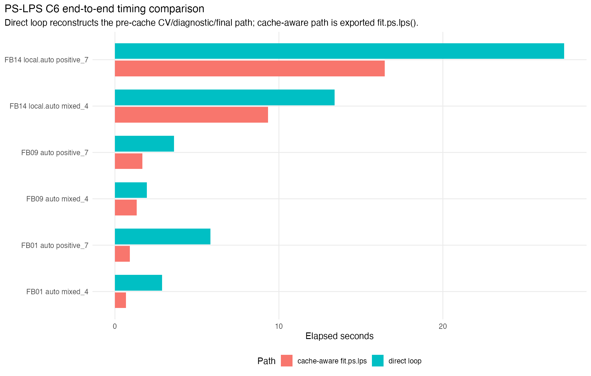
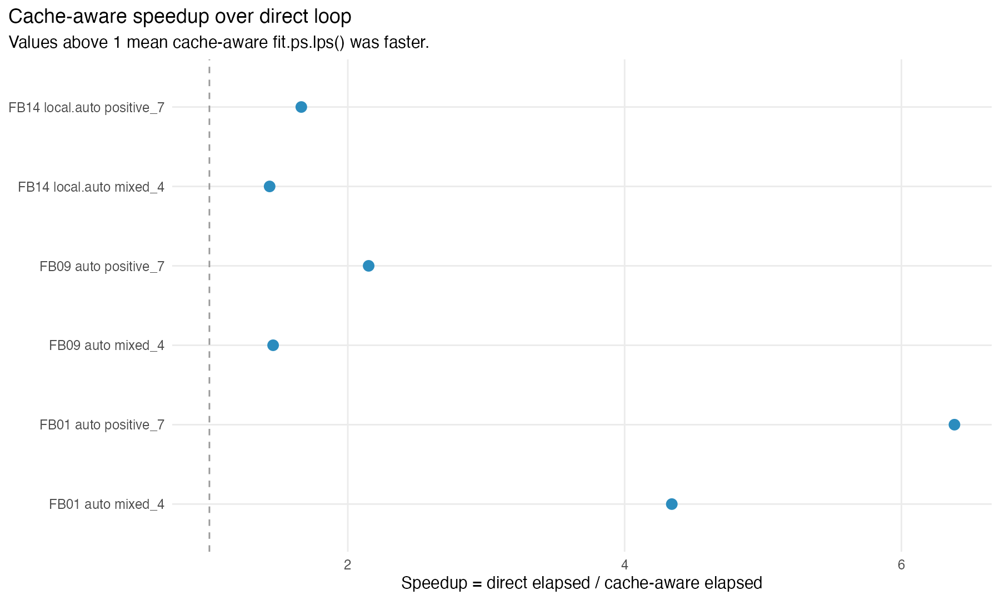
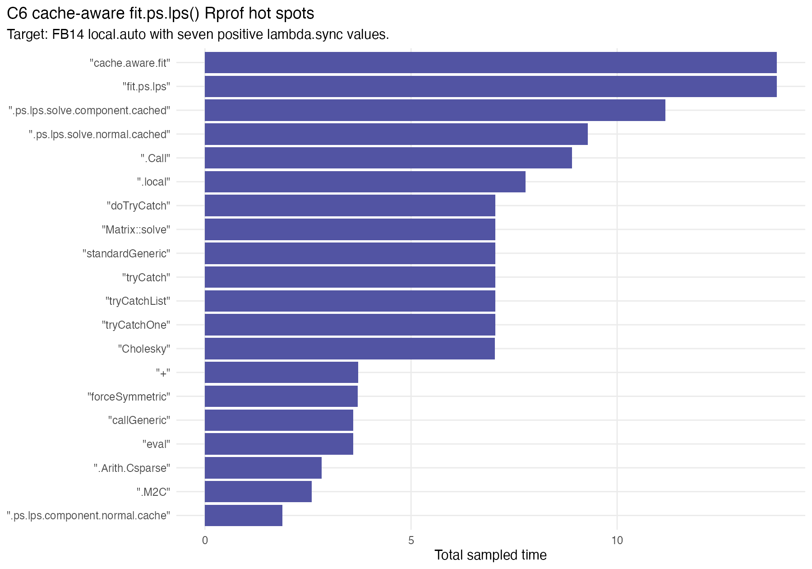

C6 validates the cache-aware exported fitter path after C5. The direct loop reconstructs the pre-cache tuning pattern using `.ps.lps.solve()` for each fold, diagnostic solve, and final fit. The cache-aware path calls `fit.ps.lps()`, which now reuses component caches across positive synchronization candidates.

Elapsed timing for direct and cache-aware paths. These timings include chart/frame preparation, synchronization-row construction, CV folds, full-data diagnostics, and final fitting.

Speedup above 1 indicates a faster cache-aware exported fitter. The expected benefit is larger for larger positive lambda grids.
| batch_id | dataset_id | chart_dim_rule | grid_name | n_lambda | n | p | support_size | chart_dim_median | chart_dim_max | direct_elapsed_sec | cache_elapsed_sec | speedup | selected_lambda_direct | selected_lambda_cache | max_cv_rmse_delta | max_fitted_delta | cache_backend |
|---|---|---|---|---|---|---|---|---|---|---|---|---|---|---|---|---|---|
| FB01 | LA-D1-RAW-N500 | auto | mixed_4 | 4 | 500 | 4 | 35 | 2 | 2 | 2.878 | 0.663 | 4.3409 | 10 | 10 | 0.0000000000000093814 | 0.00000000000052819 | component |
| FB01 | LA-D1-RAW-N500 | auto | positive_7 | 7 | 500 | 4 | 35 | 2 | 2 | 5.815 | 0.911 | 6.3831 | 10 | 10 | 0.00000000000002591 | 0.00000000000052819 | component |
| FB09 | LA-13K-SUB-N500 | auto | mixed_4 | 4 | 500 | 178 | 15 | 3 | 3 | 1.951 | 1.336 | 1.4603 | 10 | 10 | 0.0000000018719 | 0.00000000000040318 | component |
| FB09 | LA-13K-SUB-N500 | auto | positive_7 | 7 | 500 | 178 | 15 | 3 | 3 | 3.598 | 1.673 | 2.1506 | 10 | 10 | 0.0000000048882 | 0.00000000000040318 | component |
| FB14 | SYN-RANK-BLOCKS-N600-P100 | local.auto | mixed_4 | 4 | 600 | 100 | 35 | 6 | 6 | 13.398 | 9.336 | 1.4351 | 10 | 10 | 0.0000000000001624 | 0.0000000000003556 | component |
| FB14 | SYN-RANK-BLOCKS-N600-P100 | local.auto | positive_7 | 7 | 600 | 100 | 35 | 6 | 6 | 27.393 | 16.462 | 1.664 | 10 | 10 | 0.00000000000065165 | 0.0000000000003556 | component |
The cache-aware and direct paths should agree up to numerical error. The summary table reports maximum CV RMSE and final fitted-value differences for each profiled case.

Sampled total time for cache-aware fit.ps.lps() on the heaviest profile target.
| function_name | total.time | total.pct | self.time | self.pct |
|---|---|---|---|---|
| "cache.aware.fit" | 13.87 | 100 | 0 | 0 |
| "fit.ps.lps" | 13.87 | 100 | 0 | 0 |
| ".ps.lps.solve.component.cached" | 11.17 | 80.53 | 0 | 0 |
| ".ps.lps.solve.normal.cached" | 9.29 | 66.98 | 0 | 0 |
| ".Call" | 8.9 | 64.17 | 8.9 | 64.17 |
| ".local" | 7.78 | 56.09 | 0 | 0 |
| "doTryCatch" | 7.05 | 50.83 | 0 | 0 |
| "Matrix::solve" | 7.05 | 50.83 | 0 | 0 |
| "standardGeneric" | 7.05 | 50.83 | 0 | 0 |
| "tryCatch" | 7.05 | 50.83 | 0 | 0 |
| "tryCatchList" | 7.05 | 50.83 | 0 | 0 |
| "tryCatchOne" | 7.05 | 50.83 | 0 | 0 |
| "Cholesky" | 7.03 | 50.68 | 0 | 0 |
| "+" | 3.72 | 26.82 | 0 | 0 |
| "forceSymmetric" | 3.71 | 26.75 | 0.27 | 1.95 |
| "callGeneric" | 3.6 | 25.96 | 0 | 0 |
| "eval" | 3.6 | 25.96 | 0 | 0 |
| ".Arith.Csparse" | 2.83 | 20.4 | 0 | 0 |
| ".M2C" | 2.59 | 18.67 | 1.11 | 8 |
| ".ps.lps.component.normal.cache" | 1.88 | 13.55 | 0 | 0 |